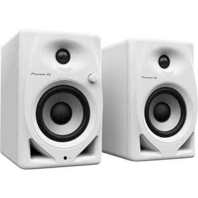

Daftar Barang

Laptop
Proyektor

Kabel Roll
HDMI

Kantor Jurusan RPL
Peminjaman barang di kantor jurusan merupakan salah satu layanan yang disediakan untuk mendukung kebutuhan siswa, guru, dan staf dalam kegiatan akademik maupun non-akademik. Barang-barang yang biasanya tersedia untuk dipinjam meliputi peralatan teknologi seperti proyektor, VGA, HDMI, kabel roll, hingga perangkat lainnya seperti laptop. Proses peminjaman biasanya melibatkan pengisian formulir, baik secara langsung di kantor, dengan mencantumkan data peminjam, tujuan peminjaman, serta jangka waktu penggunaan. Penting bagi peminjam untuk mematuhi aturan yang telah ditetapkan, seperti pengembalian tepat waktu dan menjaga kondisi barang agar tetap dalam keadaan baik. Layanan ini bertujuan untuk mendukung kelancaran kegiatan operasional dan akademik di lingkungan jurusan.
Peminjaman sarana dan prasarana di kantor jurusan hanya diperbolehkan bagi dosen, staf, dan mahasiswa untuk keperluan akademik atau operasional resmi. Pengajuan dilakukan minimal 1 hari sebelumnya melalui formulir resmi dengan mencantumkan data lengkap. Barang hanya boleh digunakan sesuai izin dan harus dikembalikan tepat waktu dalam kondisi baik. Kerusakan atau kehilangan menjadi tanggung jawab peminjam, termasuk biaya perbaikan atau penggantian. Pelanggaran aturan dapat berakibat sanksi administratif atau penangguhan hak peminjaman. Barang penting atau vital tidak dapat dipinjam tanpa izin khusus.